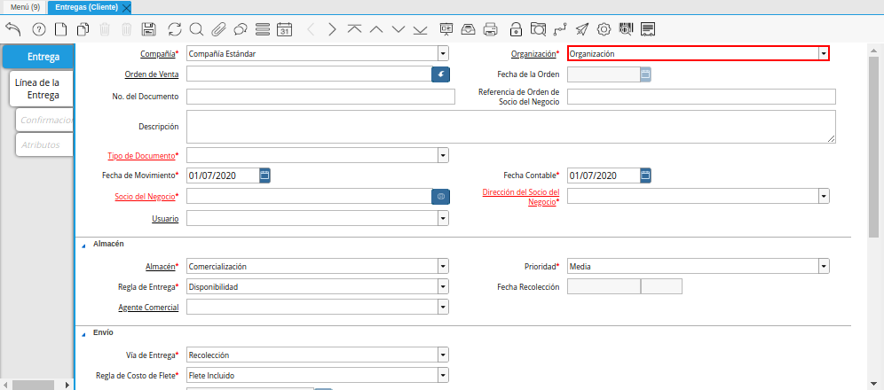
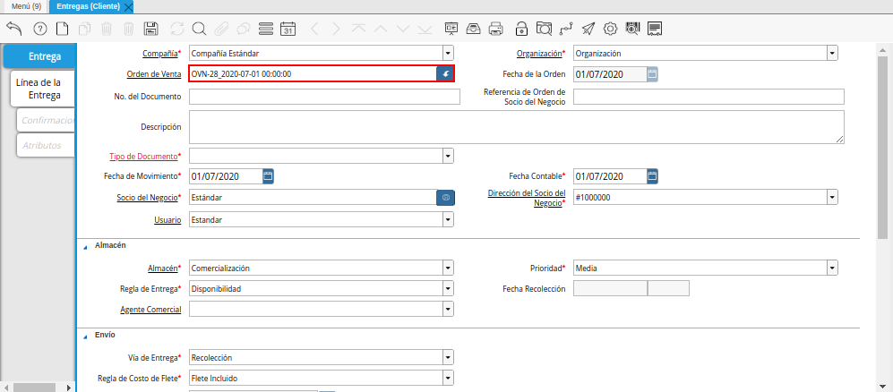
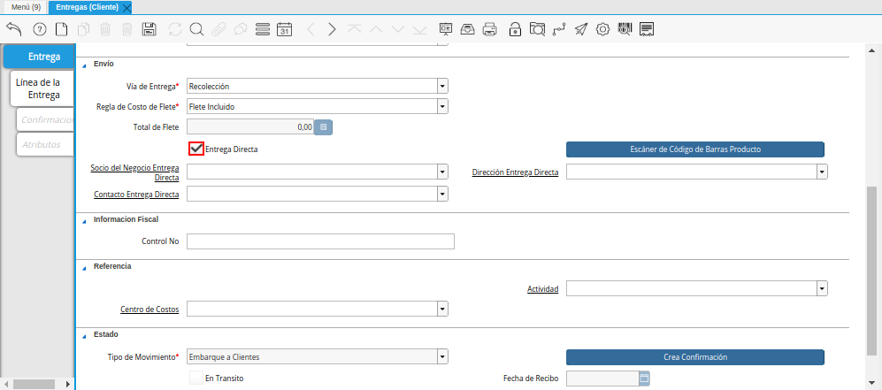
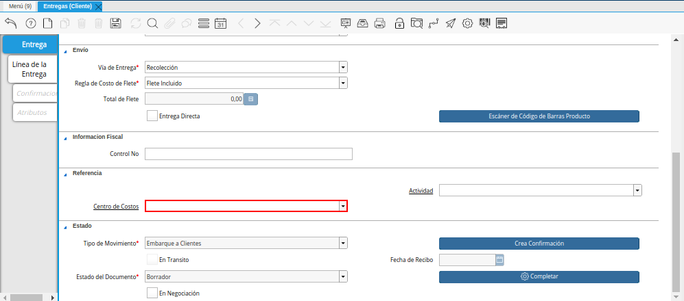
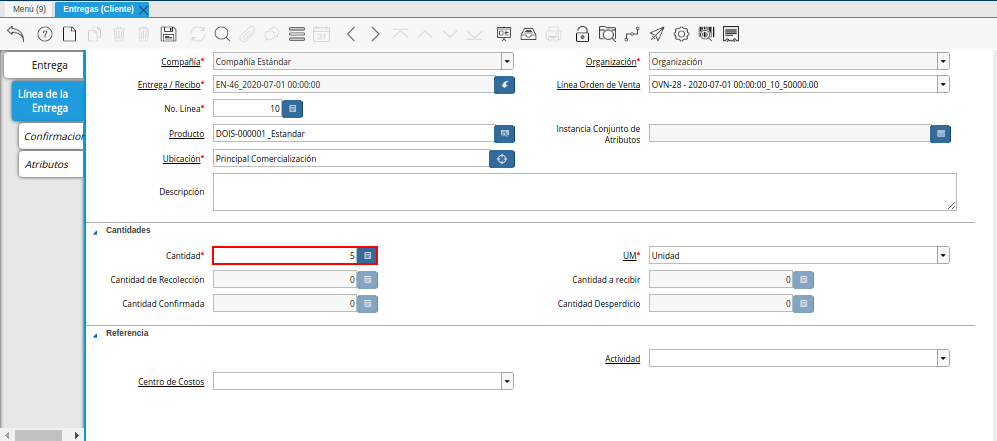
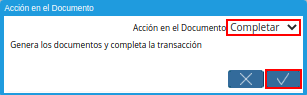

Registro de Entregas (Cliente)
Ubique y seleccione en el menú de ADempiere, la carpeta “Gestión de Ventas”, luego seleccione la carpeta “Entregas”, por último seleccione la ventana “Entregas (Cliente)”.
Imagen 1. Menú de ADempiere

Podrá visualizar la ventana “Entregas (Cliente)”, con los registros de las entregas de productos realizadas a los clientes de las diferentes organizaciones.
Imagen 2. Ventana Entregas Cliente

Seleccione el icono “Registro Nuevo”, para crear un nuevo registro de entrega a cliente en ADempiere.
Imagen 3. Icono Registro Nuevo de la Ventana Entregas Cliente
Seleccione en el campo “Compañía”, la compañía de la cual esta realizando la entrega al cliente.
Imagen 4. Campo Compañía de la Ventana Entregas Cliente
Seleccione en el campo “Organización”, la organización de la cual esta realizando la entrega al cliente.

Imagen 5. Campo Organización de la Ventana Entregas Cliente
Seleccione en el campo “Orden de Venta”, la orden de venta por la cual esta realizando la entrega al cliente.

Imagen 6. Campo Orden de Venta de la Ventana Entregas Cliente
Podrá visualizar en el campo “Fecha de la Orden”, la fecha de la orden de venta seleccionada en el campo “Orden de Venta”.
Imagen 7. Campo Fecha de la Orden de la Ventana Entregas Cliente
Introduzca en el campo “No. Documento”, el número de secuencia correspondiente a la entrega que esta realizando.
Imagen 8. Campo No Documento de la Ventana Entregas Cliente
Introduzca en el campo “Referencia de Orden de Socio del Negocio”, la referencia de orden de socio del negocio.
Imagen 9. Campo Referencia de Orden de Socio del Negocio de la Ventana Entregas Cliente
Introduzca en el campo “Descripción”, una breve descripción de la entrega que esta realizando.
Imagen 10. Campo Descripción de la Ventana Entregas Cliente
Seleccione el tipo de documento a generar en el campo “Tipo de Documento”, la selección de este define el comportamiento del documento que se esta elaborando, dicho comportamiento se encuentra explicado en el documento Tipo de Documento elaborado por ERPyA.
Imagen 11. Campo Tipo de Documento de la Ventana Entregas Cliente
Seleccione en el campo “Fecha del Movimiento”, la fecha en la que esta realizando la entrega al cliente.
Imagen 12. Campo Fecha del Movimiento de la Ventana Entregas Cliente
Seleccione en el campo “Fecha Contable”, la fecha en la que esta realizando la entrega al cliente.
Imagen 13. Campo Fecha Contable de la Ventana Entregas Cliente
Seleccione en el campo “Socio del Negocio”, el socio del negocio cliente al cual le esta realizando la entrega.
Imagen 14. Campo Socio del Negocio de la Ventana Entregas Cliente
Seleccione en el campo “Dirección del Socio del Negocio”, la dirección de localización del socio del negocio cliente seleccionado en el campo “Socio del Negocio”.
Imagen 15. Campo Dirección del Socio del Negocio de la Ventana Entregas Cliente
Seleccione en el campo “Usuario”, el usuario del socio del negocio cliente.
Imagen 16. Campo Usuario de la Ventana Entregas Cliente
Seleccione en el campo “Almacén”, el almacén donde se encuentra ubicado el producto por el cual esta realizando la entrega al cliente.
Imagen 17. Campo Almacén de la Ventana Entregas Cliente
Seleccione en el campo “Prioridad”, el nivel de importancia o prioridad de la entrega que esta realizando.
Imagen 18. Campo Prioridad de la Ventana Entregas Cliente
Seleccione en el campo “Regla de Entrega”, la regla para la entrega del producto.
Imagen 19. Campo Regla de Entrega de la Ventana Entregas Cliente
Podrá visualizar en el campo “Fecha Recolección”, la fecha de recolección de la entrega.
Imagen 20. Campo Fecha Recolección de la Ventana Entregas Cliente
Seleccione en el campo “Agente Comercial”, el socio del negocio empleado o vendedor de la organización que esta realizando la entrega al cliente.
Imagen 21. Campo Agente Comercial de la Ventana Entregas Cliente
Seleccione en el campo “Vía de Entrega”, la forma en la que será entregada la orden.
Imagen 22. Campo Vía de Entrega de la Ventana Entregas Cliente
Seleccione en el campo “Regla de Costo de Flete”, la regla para el costo del flete de la entrega de la orden.
Imagen 23. Campo Regla de Costo de Flete de la Ventana Entregas Cliente
Podrá visualizar en el campo “Total de Flete”, el total del flete de la entrega de la orden.
Imagen 24. Campo Total de Flete de la Ventana Entregas Cliente
El checklist “Entrega Directa” indica que los envíos de la nota se envían del vendedor directamente al cliente.

Imagen 25. Checklist Entrega Directa de la Ventana Entregas Cliente
La selección del checklist “Entrega Directa”, habilita los siguientes campos:
Seleccione en el campo “Socio del Negocio Entrega Directa”, el socio del negocio para la entrega directa.
Imagen 26. Campo Socio del Negocio Entrega Directa de la Ventana Entregas Cliente
Seleccione en el campo “Dirección Entrega Directa”, la dirección del socio del negocio para la entrega directa.
Imagen 27. Campo Dirección Entrega Directa de la Ventana Entregas Cliente
Seleccione en el campo “Contacto Entrega Directa”, el usuario de contacto del socio del negocio para la entrega directa.
Imagen 28. Campo Contacto Entrega Directa de la Ventana Entregas Cliente
Seleccione la opción “Escáner de Código de Barras Producto”, para escanear el código de barras del producto.
Imagen 29. Campo Escáner de Código de Barras Producto de la Ventana Entregas Cliente
Introduzca en el campo “Control No”, el número de control fiscal correspondiente a la entrega que esta realizando.
Imagen 30. Campo Control No de la Ventana Entregas Cliente
Seleccione en el campo “Centro de Costos”, el centro de costos para la entrega al cliente.

Imagen 31. Campo Centro de Costos de la Ventana Entregas Cliente
Seleccione en el campo “Actividad”, la actividad correspondiente a la entrega que esta realizando.
Imagen 32. Campo Actividad de la Ventana Entregas Cliente
Podrá visualizar en el campo “Tipo de Movimiento”, el tipo de movimiento que esta realizando de acuerdo al tipo de documento seleccionado en el campo “Tipo de Documento”.
Imagen 33. Campo Tipo de Movimiento de la Ventana Entregas Cliente
Seleccione la opción “Crea Confirmación”, para crear confirmaciones para el documento.
Imagen 34. Opción Crea Confirmación de la Ventana Entregas Cliente
El checklist “En Transito”, indica que el movimiento se encuentra en transito.
Imagen 35. Checklist En Transito de la Ventana Entregas Cliente
Podrá visualizar en el campo “Fecha de Recibo”, la fecha en la que el producto fue recibido.
Imagen 36. Campo Fecha de Recibo de la Ventana Entregas Cliente
Podrá visualizar en el campo “Estado del Documento”, el estado en el que se encuentra el documento que esta realizando.
Imagen 37. Estado del Documento de la Ventana Entregas Cliente
Seleccione el checklist “En Negociación”, para indicar que el documento se encuentra en negociación.
Imagen 38. Campo En Negociación de la Ventana Entregas Cliente
Note
Seleccione el icono “Guardar Cambios”, ubicado en la barra de herramientas de ADempiere. La selección de este icono permite guardar el registro de los campos de la pestaña para proceder a posicionarse en otra pestaña de la misma ventana.


Seleccione la pestaña “Línea de la Entrega”, para cargar los productos involucrados en la entrega.
Imagen 39. Pestaña Línea de la Entrega de la Ventana Entregas Cliente
Seleccione en el campo “Línea Orden de Venta”, la línea de la orden de venta seleccionada en el campo “Orden de Venta”, de la pestaña “Entrega”, de la ventana “Entregas (Cliente)”.
Imagen 40. Campo Línea de la Orden de Venta de la Pestaña Línea de la Entrega de la Ventana Entregas Cliente
Podrá visualizar en el campo “No Línea”, el número de línea correspondiente al registro que esta realizando.
Imagen 41. Campo No. Línea de la Pestaña Línea de la Entrega de la Ventana Entregas Cliente
Seleccione en el campo “Producto”, el producto correspondiente a la entrega que esta realizando.
Imagen 42. Campo Producto de la Pestaña Línea de la Entrega de la Ventana Entregas Cliente
Seleccione en el campo “Instancia Conjunto de Atributos”, la instancia de conjunto de atributos del producto.
Imagen 43. Campo Instancia Conjunto de Atributos de la Pestaña Línea de la Entrega de la Ventana Entregas Cliente
Seleccione en el campo “Ubicación”, la ubicación específica del producto seleccionado en el campo “Producto”.
Imagen 44. Campo Ubicación de la Pestaña Línea de la Entrega de la Ventana Entregas Cliente
Introduzca en el campo “Descripción”, una breve descripción de la entrega del producto que esta realizando.
Imagen 45. Campo Descripción de la Pestaña Línea de la Entrega de la Ventana Entregas Cliente
Seleccione en el campo “Cantidad”, la cantidad del producto que se encuentra entregando.

Imagen 46. Campo Cantidad de la Pestaña Línea de la Entrega de la Ventana Entregas Cliente
Seleccione en el campo “UM”, la unidad de medida del producto que se encuentra entregando.
Imagen 47. Campo UM de la Pestaña Línea de la Entrega de la Ventana Entregas Cliente
En el campo “Cantidad de Recolección”, podrá visualizar la cantidad de productos de recolección.
Imagen 48. Campo Cantidad de Recolección de la Pestaña Línea de la Entrega de la Ventana Entregas Cliente
En el campo “Cantidad a Recibir”, podrá visualizar la cantidad de productos a recibir.
Imagen 49. Campo Cantidad a Recibir de la Pestaña Línea de la Entrega de la Ventana Entregas Cliente
En el campo “Cantidad Confirmada”, podrá visualizar la cantidad confirmada de productos.
Imagen 50. Campo Cantidad Confirmada de la Pestaña Línea de la Entrega de la Ventana Entregas Cliente
En el campo “Cantidad Desperdicio”, podrá visualizar la cantidad de desperdicio de productos.
Imagen 51. Campo Cantidad Desperdicio de la Pestaña Línea de la Entrega de la Ventana Entregas Cliente
Seleccione en el campo “Centro de Costos”, el centro de costos para la entrega de los productos.
Imagen 52. Campo Centro de Costos de la Pestaña Línea de la Entrega de la Ventana Entregas Cliente
Seleccione en el campo “Actividad”, la actividad correspondiente a la entrega que esta realizando.
Imagen 53.


Seleccione la pestaña principal “Entrega” y la opción “Completar”, ubicada en la parte inferior de la ventana “Entregas (Cliente)”.
Imagen 54. Pestaña Entrega de la Ventana Entregas Cliente y Opción Completar
Seleccione la acción “Completar” y la opción “OK”, para completar el documento “Entrega”.

Imagen 55. Acción Completar y Opción Ok